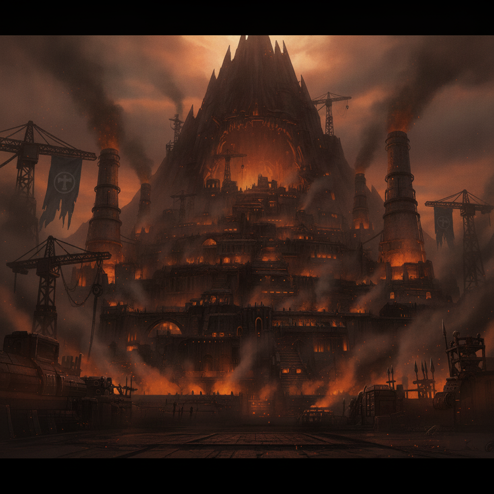
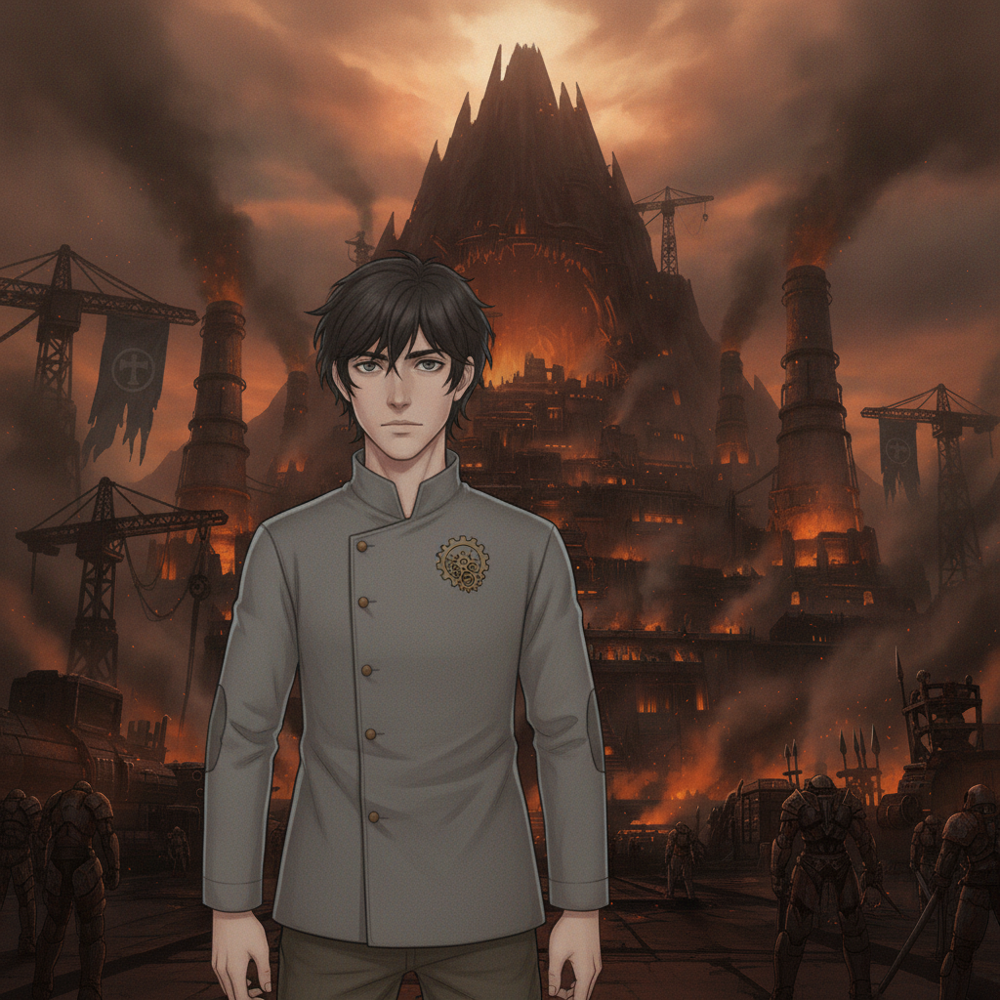
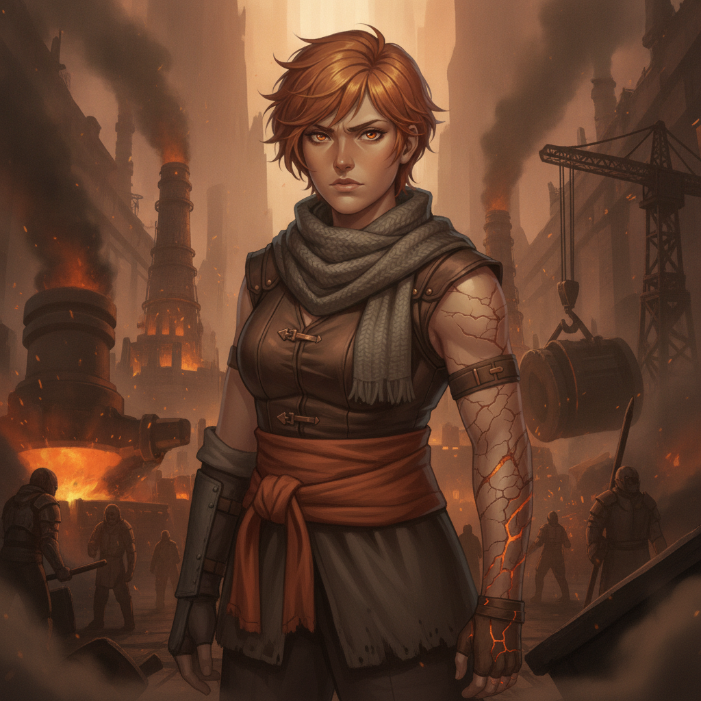

Cinderhold is bathed in the warm, defiant glow of a new day. Today, there are no raging kilns of war, but the vibrant, joyful roar of celebration. Our wedding day.
Ember stands before me, her smile radiant. The Rust on her arm is a scar of survival, not a mark of impending doom.

Caedon Vale“You loved fiercely because you never expected to love long. I am here, Ember. We are here. Long is possible.”

Ember Kellan“Long... with you. I believe it.”
Among the Kiln-Sworn, among those who understand the true cost of defiance, we exchange our vows. A promise that love can endure. The end.